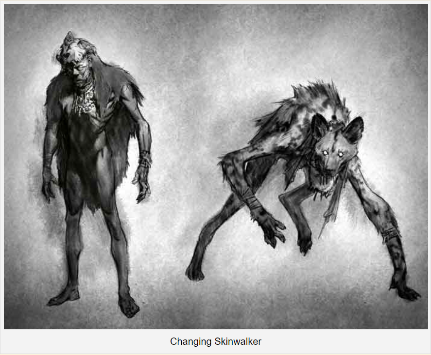

The Skinwalker is an ancient Native American legend that takes on various forms across tribes. In Navajo lore, a skin-walker ( yee naaldlooshii) is a kind of wicked sorcerer who can transform into, occupy, or disguise themselves as an animal. The myth behind this shapeshifting being known as the Skinwalker has mostly been consigned the label of either hoax, too much peyote, or simply oral traditions transfixed to a culture’s beliefs. The Navajo Skinwalker nevertheless has deep roots in aboriginal American folklore. Other tribes throughout the region also have their own version of the Skinwalker. The Pueblo people, Apache, and Hopi each have their own unique interpretation of what a skinwalker might be.
